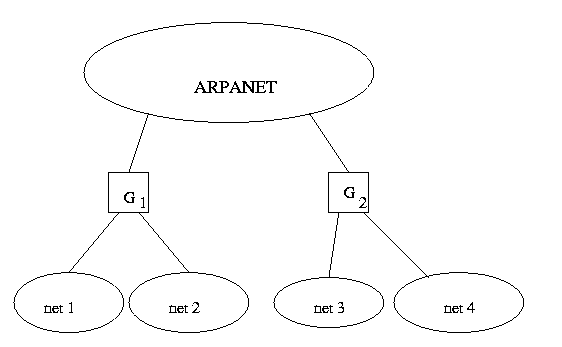
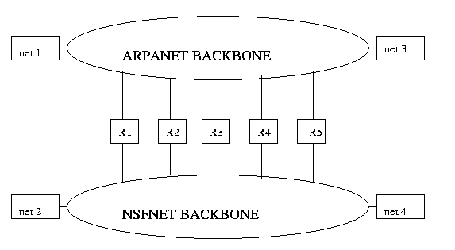
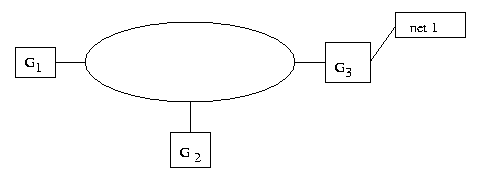
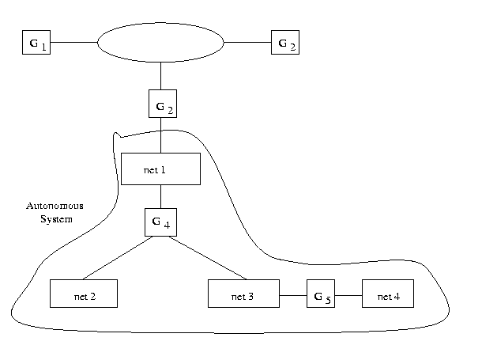
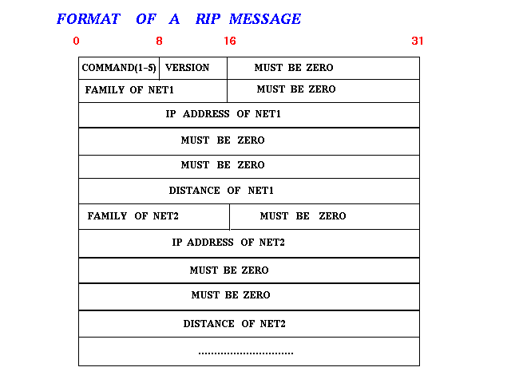
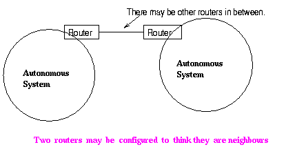

Computer Networks
Prev |
Next |
Index
Routing in Internet
The Origin of Internet
The response of Internet to the issue of choosing routing tables with
complete/par tail information is shown by the following architecture.
There are a few nodes having complete routing information and a large
number of nodes with partial information. The nodes with complete
information, called core gateways, are well connected by a Backbone
Network. These nodes talk to each other to keep themselves updated.
The non-core gateways are connected to the core gateways.
(Historically, this architecture comes from the ARPANET.)
The original internet was structured around a backbone of ARPANET with
several core gateways connected to it .These core gateways connected
some Local Area Networks (LANs) to the rest of the network. These
core gateways talked to themselves and exchanged routing
information's. Every core gateway contained complete information
about all possible destinations.

How do you do routing ?
The usual IP routing algorithm employs an internet routing table (some
times called an IP routing table) on each machine that Stores the
information about the possible destinations, and how to reach them.
Default Routes
This technique used to hide information and keep routing table size small
consolidates multiple entries into a default case. If no route
appears in the routing table, the routing routine sends the data gram
to the default router.
Default routing is especially useful when a site has a small set of local addresses and only one
connection to the rest of the internet.
Host-Specific Routes
Most IP routing software allows per-host routes to be specified as a
special case. Having per-host routes gives the local network
administrator more control over network use, permits testing, and can
also be used to control access for security purposes. when debugging
network connections or routing tables, the ability to specify a
special route to one individual machine turns out to be especially
useful.
Internet with Two Backbones

As long as there was just one single
router connecting ARPANET with NSFNET there was no problem. The core
gateways of ARPANET had information about all destinations and the
routers inside NSFNET contained information about local destinations
and used a default route to send all non-NSFNET traffic to between
NSFNET and ARPANET as both of them used different matrices to measure
costs. the core gateways through the router between ARPANET and
NSFNET. However as multiple connections were made between the two
backbones, problems arise. Which route should a packet from net1 to
net2 take? Should it be R1 or R2 or R3 or R4 or
R5? For this some exchange of routing information between the two
backbones was necessary. But, this was again a problem as how should
we compare information.
Gateway-To-Gateway Protocol (GGP)
This was the protocol used by the core-routers to exchange routing information
among themselves. This is based on Distance Vector Algorithm
and uses number of hops as the distance metric. This is a very poor
metric as this does not take into account the load on the links and
whether a link is slow or fast. A provision is made to manually
increment the hop count in case a link is particularly slow.A protocol based on Shortest Path First Algorithm , known as SPREAD ,was also used for the same purpose.

Added Complexity To The Architecture Model
As the number of networks and routers increased, to reduce the load on
the core gateways because of the enormous amount of calculations,
routing was done with some core gateways keeping complete information
and the non-core gateways keeping partial information.

In thisarchitecture, G1 ,G2 ,G3 are all
core gateways and G4 and G5 are non-core
gateways. We must have a mechanism for someone to tell G2
that it is connected to net2 , net3 and net4 , besides net1. Only G5
can tell this to G2 and so we must provide for a mechanism
for G2 to talk to G5 . A concept of one
backbone with core gateways connected to Autonomous Systems
was developed. An Autonomous system is a group of networks
controlled by a single administrative authority. Routers within an
autonomous system are free to choose their own mechanisms for
discovering , propagating ,validating , and checking the consistency
of routes. Each autonomous system must agree to advertise network
reachability information to other autonomous systems. Each
advertisement propagates through a core router. The assumption made
is that most of the routers in the autonomous system have complete
information about the autonomous system. One such router will be
assigned the task of talking to the core gateway.
Interior Gateway Protocols (IGP)
IGP is a type of protocols used by the routers in an autonomous system to
exchange network reachability and routing information. Some of
IGPs are given below.
Routing Information Protocol (RIP)
This is one of the most widely used IGP. It was developed at Berkeley. This
is also known by the name of the program that implements it,
routed .This implements Distance Vector algorithm.Features of RIP:
-
RIP uses a hop count metric to measure the distance to a destination. To
compensate for differences in technologies, many RIP implementations allow
managers to configure artificially high hop
counts when advertising connections to slow networks. All routinfg
updates are broadcast. This allows all hosts on the network to know
about the routes.
-
To prevent routes from oscillating between two or more equal cost
paths, RIP specifies that existing routes should be retained until a
new route has strictly lower cost. Since RIP does not explicitly
detect routing loops, RIP must either assume participants can be
trusted (being part of one autonomous system) or take precautions to
prevent such loops.
-
To prevent instabilities, RIP must use a low value for the maximum
possible distance.RIP uses 16 as the maximum hop count. This
restricts the maximum network diameter of the system to 16.
-
To solve the slow convergence problem arising due to slow propagation
of routing information, RIP uses Hold Down. If a particular link is
down , any new information about that link is not accepted till some
time. This is because the router must wait till the information
aboutthe link being down propagates to another router before
accepting information from that router about that down link.
-
RIP runs on top of TCP/IP. RIP allows addresses to be of a maximum size
of 14 Bytes. The Distance varies from 1 to 16 (where 16 is used to
signify infinity). RIP address 0.0.0.0 denotes a default route.
There is no explicit size of the RIP message and any number of
routes can be advertized.
The message format is as shown:

OSPF(Open Shortest Path First )
This is an Interior Gateway Protocol designed by the Internet Engineering
Task Force ( IETF ). This algorithm scales better than the vector
distance algorithms. This Protocol tackles several goals:
-
OSPF includes type of service(ToS) routing. So, you can installmultiple
routers to a given destination, one for each type of service. When
routing a datagram, a router running OSPF uses both the destination
address and type of service fields in the IP Header to choose a
route.
-
OSPF provides load balancing. If there are multiple routes to a given
destination at the same cost, OSPF distributes traffic over all the
routes equally.
-
OSPF allows for creation of AREA HIERARCHIES. This makes the growth of the
network easier and makes the network at a site easier to manage. Each
area is self contained, so, multiple groups within a site can
cooperate in the use of OSPF for routing.
-
OSPF protocol specifies that all exchanges between the routers be
authenticated. OSPF allows variety of authentication schemes, and
even allows one area to choose a different scheme from the other
areas.
-
To accomodate multi-access networks like ethernet, OSPF allows every
multi-access network to have a designated router( designated gateway).
-
To permit maximum flexibility, OSPF allows the description of a virtual
network topology that abstracts away from details of physical
connections.
-
OSPF also allows for routers to exchange routing information learned from
other sites. The message format distinguishes between information
acquired from external sources and information acquired from routers
interior to the site, so there is no ambiguity about the source or
reliability of routes.
-
It hastoo much overhead of sending LSPs but is gradually becoming popular.

Exterior Gateway Protocol (EGP)
If two routers belonging to two different autonomous systems exchange
routing information ,the protocol used is called EGP . EGP consists
of:
- Acquisition Request:
A router sends a request to another neighbour router
saying 'I want to talk'.
- Acquisition Confirm:
This is a positive reply to the Acquisition request.
- Acquisition Refuse:
This is a negative response to the Acquisition request.
- Cease Request:
This requests termination of neighbour relationship.
- Cease Confirm:
This is a confirmation response to the Cease Request.
- Hello :
This is used to find if the neighbour router is up or down.This
requests router to respond if alive.
- I Heard You:
This is a response to the Hello message confirming that
the router is alive. Because it is possible for Hello or I Heard You
messages to be lost in transit, EGP uses a k-out-of-n rule to
determine whether a network is down.At least k of the last n
messages must fail for the router to declare its neighbour down.
- Poll Request:
This is a request for network routing update.
- Routing Update:
This conveys routing information about reachable networks
to its EGP neighbour. The routing information is the distance vector
of the reachable networks.
- Error:
This is a response to an incorrect message.
EGP is used only to find network reachability and not for differentiating
between good and bad routes. We can only use distance metric to
declare a route plausible and not for comparing it with some other
route (unless the two route form part of a same autonomous system).
Since there cannot be two different routes to the same network, EGP
restricts the topology of any internet to a tree structure in which a
core system forms the root. There are no loops among other autonomous
systems connected to it. This leads to several problems:
- Univerasal connectivity fails if the core gateway system fails.
- EGP can advertise only one path to a given network.
- EGP does not support load sharing on routers between arbitrary
autonomous systems.
- Multiple backbone networks with multiple connections between them cannot be
handled by EGP.
Border Gateway Protocol(BGP)
BGP is a distance-vector protocol used to communicate between
different ASes. Instead of maintaining just the cost to
each destination,each BGP router keeps track of the exact path
used.Similarly,instead of periodically giving each neighbour its
estimated cost to each destination, each BGP router tells its
neighbours the path it is using.Every BGP router contains a module
that examines routes to a given destination and scores them returning
a number for destination to each route. Any route violating a policy
constraint automatically gets a score of infinity. The router adapts
a route with shortest distance.The scoring function is not a part of
the BGP protocol and can be any function that the system managers
want.BGP easily solves the count to infinity problem that plagues
other distance-vector algorithms as whole path is known.
back to top
Prev| Next |
Index